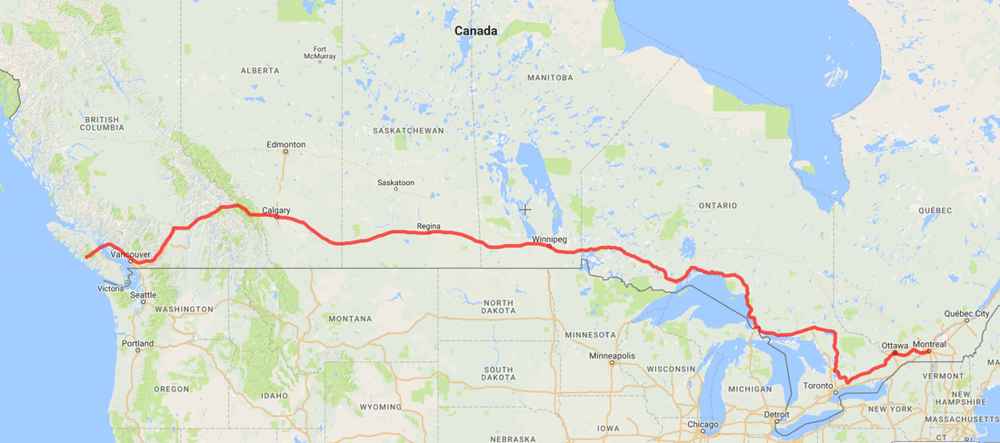
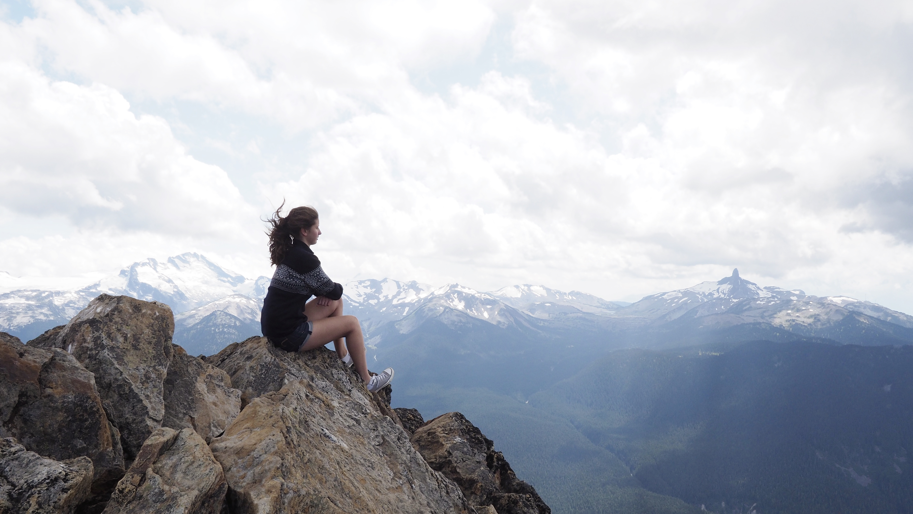

Hitchhiking from QC to BC
July 19 to August 3, 2016
On July 18, I received a text from a friend in the middle of the night inviting me on a trip across Canada. Within 36 hours we were on the road - or rather, we were standing on the side of the road by the highway ramp with our thumbs outstretched. In total, 22 incredible strangers welcomed us into their cars, making our week-long 5,000 kilometre journey from Montréal to Vancouver possible.
Although not as common as in the 60s, hitchhiking still allows for a free, exciting and meaningful mode of transportation. There’s no way of knowing what kind of person will pull over for you next – it could be a grandfather eager to share a bucketful of handpicked blackberries, a guidance counsellor covered in tattoos and piercings, a teen returning from Bible camp, or anyone in-between. Every driver has their own story and life advice, and hitchhiking across this beautiful country alongside my friend allowed me to recognize the generosity and kindness expressed by so many.

Moraine Lake, Alberta
Note, I neither encourage nor discourage hitchhiking as my experiences are subjective. However, if you do decide to give it a go, here are some tips:
- Never be in a rush; desperation leads to tunnel-vision.
- Follow your gut feeling.
- Carry camping gear with you as you never know how long you’ll be waiting for a lift or exactly where you’ll be dropped off.
- Don’t be afraid to wave and smile to passerby.
- Use highway ramps by gas stations and restaurants as excellent waiting spots, but just make sure there’s enough space for the driver to safely pull over.

Alexis, my travel partner, stands overlooking Dinosaur Provincial Park in Alberta.
Headlee's Tips for Better Conversations
1. Listen and be present
2. Be open-minded; assume everyone knows something that you don’t
3. Use open-ended question (who, what, where, when, why)
4. Leave out details; be brief
5. Be interested in other people; always be prepared to be amazed

Day 16 Journal Entry
“When you’re 30,000ft+ in the air, you oftentimes forget that there are lives, stories, and adventures below. You are flying – no, racing – over happiness, too eager to get to your destination that you forget about the journey. I urge you to discover. All you need is love.”
Self-portrait on the top of Whistler, British Columbia.